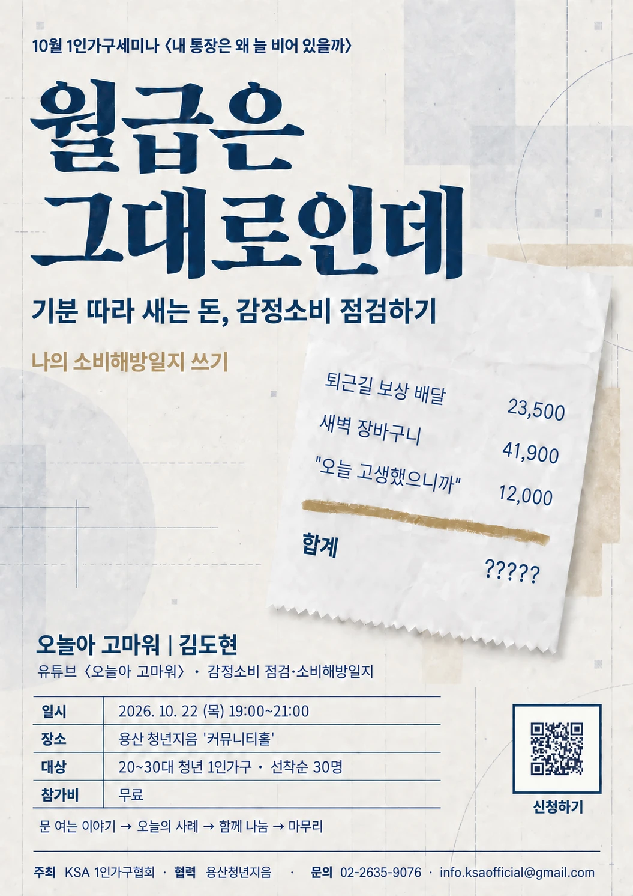

|
|
|
제16호 · 2026.10.06(화)
혼자 사는 삶을 위한
한 주의 정책·생활 소식
10월 세미나 신청 · 정책브리핑 9월호·3분기호 · 1인가구 데이터 허브 오픈 · 블로그 7편
|
|
안녕하세요, 회원 여러분. 아침저녁 공기가 한결 차가워진 10월입니다. 이번 KSA WEEKLY 제16호는 개천절 대체공휴일로 하루 늦은 화요일에 찾아뵙습니다. 청년미래센터와 주거안정플랜 소식을 먼저 전하고 지난주 협회 블로그 글과 10월 세미나, 새로 나온 정책브리핑, 홈페이지에 연 1인가구 데이터 허브 소식을 함께 담았습니다. 환절기 건강 잘 챙기시기 바랍니다.
|
|
10월 1인가구 세미나 · 신청 접수 중
〈내 통장은 왜 늘 비어 있을까〉 월급은 그대로인데
기분 따라 새는 돈, 감정소비 점검하기 · 나의 소비해방일지 쓰기

|
일시 2026. 10. 22(목) 저녁 7시~9시
장소 용산 청년지음 커뮤니티홀 (서울 용산구 서빙고로 17)
연사 김도현 (유튜브 ‘오늘아 고마워’)
대상 20~30대 청년 1인가구, 선착순 30명
참가비 회원 무료 (비회원 3만 원)
진행 여는 이야기, 강사 소비 경험 나눔, 참가자 소비 이야기 나눔, 마무리 순서로 진행합니다.
함께하는 곳 용산 청년지음 ‘지음콜라보’ 사업과 협력해 진행합니다.
|
신청 기간 10월 1일(목)~19일(월) · 신청 링크: https://forms.gle/geyJYoPBvnoqYwrLA · 문의 02-2635-9076
|
|
협회 동향
‘1인가구 데이터 허브’를 협회 홈페이지에 열었습니다
협회는 전세사기 예방·대응 도구 ‘전세ONE’에 이어 ‘1인가구 데이터 허브’를 공식 홈페이지에 등록했습니다. 1인가구 데이터 허브에는 성평등가족부가 제공하는 1인가구 관련 데이터를 비롯해 혼자 사는 삶에 필요한 여러 통계와 자료를 한곳에 모았습니다. 여러 곳에 흩어져 있던 자료를 이제 홈페이지에서 쉽게 찾아보실 수 있습니다. 회원 여러분께서 생활과 활동에 잘 활용해 주시기 바랍니다.
협회는 앞으로 더 많은 데이터를 확충할 수 있도록 성평등가족부와 지속적으로 협력해 나가기를 기대합니다.
|
|
|
정책브리핑
정책브리핑 9월호와 3분기호가 나왔습니다
KSA 1인가구협회 정책위원회 · 2026년 10월 1일 발행
월간 정책브리핑 9월호 (제2026-09호) 정부가 2030년까지 공적주택 119만 채를 공급하는 주거 계획을 내놓았지만 혼자 사는 중장년은 배정 대상에서 빠져 있습니다.
분기 정책브리핑 3분기호 (제2026-Q3호) 7~9월 혼자 사는 사람의 삶에 영향을 준 정책을 석 달의 흐름으로 다시 정리했습니다.
|
|
|
지난주 블로그 다이제스트 · 9/21~10/2
| 01 | 청년미래센터는 전국 17곳에서 여러분을 기다립니다. | | 02 | 주거안정플랜으로 부담되는 청년월세 해결해보세요 | | 03 | 청년 1인가구 관계형 프로그램, 용인청년LAB | | 04 | 영등포 1인가구 호신술·가을 프로그램 모집 | | 05 | 혼자 살수록 챙기는 건강, 동네의원 주치의 등록법 | | 06 | 경기 1인가구 집수리 교육, 스스로 고치기 | | 07 | 고령자 가구 38.0%가 혼자 산다, 2026 고령자 통계 |
|
|
① 청년미래센터는 전국 17곳에서 여러분을 기다립니다.
고립·가족돌봄 청년 전담 청년미래센터, 전국 17곳으로 확대·9월 본격 운영
블로그에서 전문 보기 ›
|
② 주거안정플랜으로 부담되는 청년월세 해결해보세요
청년 월세 지원의 소득·나이 기준 완화, 2030년까지 공적주택 119만 채 공급
블로그에서 전문 보기 ›
|
③ 청년 1인가구 관계형 프로그램, 용인청년LAB
용인청년LAB, 청년 1인가구에 러닝·소셜다이닝·1대1 동행으로 '동네 친구'를 연결
블로그에서 전문 보기 ›
|
④ 영등포 1인가구 호신술·가을 프로그램 모집
영등포구 1인가구지원센터 호신술 등 가을 프로그램 모집(신청 10월)
블로그에서 전문 보기 ›
|
⑤ 혼자 살수록 챙기는 건강, 동네의원 주치의 등록법
50세 이상 동네의원 등록하면 의사·간호사·영양사 팀이 건강을 관리해주는 새 제도 시작
블로그에서 전문 보기 ›
|
⑥ 경기 1인가구 집수리 교육, 스스로 고치기
경기 김포·안성 1인가구 무료 집수리 교육, 혼자서 고장 고치는 법
블로그에서 전문 보기 ›
|
⑦ 고령자 가구 38.0%가 혼자 산다, 2026 고령자 통계
65세 이상 고령자 가구 650만 7천 중 247만 6천 가구(38.0%)가 1인가구입니다
블로그에서 전문 보기 ›
|
|
▶️ KSA 1인가구협회 유튜브
협회 소식을 영상으로도 전합니다
세미나 현장을 담은 쇼츠, 1인가구 현안에 대한 협회의 입장, 생활에 도움이 되는 팁 영상을 꾸준히 올리고 있습니다. 구독과 좋아요가 협회 활동에 큰 힘이 됩니다.
채널 주소: 유튜브에서 ‘KSA 1인가구협회’ 검색
|
|
|
더 많은 1인가구 소식은 협회 홈페이지에서 보실 수 있습니다.
|
|
|
KSA 1인가구협회 (Korea Small Household Association)
홈페이지 ksaofficial.co.kr · T. 02-2635-9076 · 본 메일은 협회 회원님께 발송되는 주간 소식지입니다.
※ 게재 정보는 발행 시점 기준이며 실제 일정·혜택은 변경될 수 있습니다.
문의하기 · info.ksaofficial@gmail.com
더 이상 소식을 받고 싶지 않으시면 수신거부 하실 수 있습니다.
|